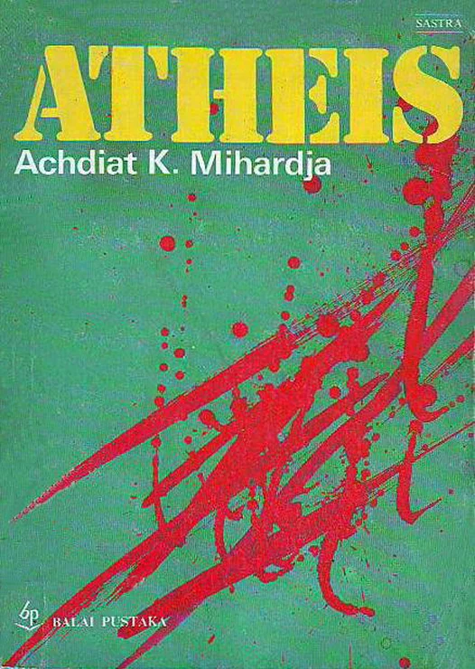

Review Atheis (Achdiat K. Mihardja): Antara Perenjak dan Manyar
Sisda Amalia Utrujah, April 26, 2017
|  |
Hidup dalam didikan keluarga yang alim, Ibu-bapaknya masih menganut ajaran mistis terkait tarekat-hakekat yang sebenarnya tidak dimengerti Hasan. Ketika Rukmini pergi kawin dengan saudagar dari Jakarta, maka hilanglah pegangan hidupnya. Bernafas seperti mobil berjalan yang tidak bersupir, akhirnya dia putuskan untuk ikut belajar ilmu yang sama. Makin matang usia Hasan pergilah dia ke kota dan menjadi pegawai kotapraja. Di sanalah saksi bisu awal jumpa dengan teman lamanya yang nakal—Rusli—dan Kartini—wanita secantik Rukmini. Kelak lewat mereka berdua itu segalanya berubah. Rusli dan Kartini adalah manusia modern yang bebas. Terlalu bebas. Mendekati anarkis. Tolol. Timbul tekat kuat dalam hati Hasan untuk mengislamkan kapir-kapir yang belum mendapat sentuhan tarekat yang dianutnya. Dengan semangat perang badar ia mulai seperti missie di sekolah katolik. Allahu Akbar! Novel ini dikemas dengan sangat gamblang dengan latar tahun dimana aliran dan isme-isme berkembang dengan pesat di Hindia. Politik balas budi yang diusung Belanda melahirkan banyak intelektual beragam haluan—kiri-kanan-tengah-radikal—apapun namanya. Kita bisa meraba bagaimana kiranya orang-orang tahun 30-40-an berperang dengan pikiran. Hasan mungkin mewakili setengah populasi Indonesia saat itu atau tiga perempat manusia saat ini, mereka yang merasa memiliki ilmu cukup untuk terjun ke dalam masyarakat dan menyebarkan Islam Rahmatanlil’alamin nyatanya hanya mampu berteriak tuduh kapir-atheist-komunis. Pegangan Hasan belum cukup untuk beragument. Kalah telak dia dengan dirinya sendiri. Tanpa sadar Hasan pun bimbang dengan hal-hal mistis yang ia anut, benarkah Tuhan ada? Atau hanya bikinan manusia akibat dari sesuatu keadaan masyarakat dan susunan ekonomi pada suatu jaman yang tidak sempurna?—begitulah kata Rusli. Dari mulai ada manusia itu harus berhadapan dengan alam … hujan lebat, banjir dahsyat, gunung meletus … ombak bergulung, memukul-mukul, memecah di pantai. Semua itu hebat dahsyat. Dan manusia merasa kecil menghadapinya. Maka pikirnya itu semua bukan pekerjaan manusia, tapi mesti pekerjaan makhluk yang lebih berkuasa. Maka dibikinnyalah dengan khayalnya makhluk-makhluk yang berkuasa, seperti setan, dewa-dewa, mambang, dan lain-lain. (hal. 75- 76) Dalam benua yang tidak begitu hebat alamnya … seperti tanah-tanah yang banyak serta luas padang pasirnya, dimana manusia hanya menghadapi ketenangan dan kesunyian lautan pasir … manusia tidak membutuhkan dewa-dewa yang banyak jumlahnya, seperti dewa api, dewa kawah, dewa hujan, dewa gunung, dewa laut, dan sebagainya. Cukuplah dengan satu saja, yaitu yang disebutnya Tuhan, Yahwe atau Allah. (hal. 76) Itulah mengapa menurut Rusli agama-agama besar yang punya satu Tuhan itu lahir di Asia dekat Afrika yang buruk nun tandus alamnya. Sekejap saja tidak sampai empat bulan. Hasan pindah haluan. Dibangkangnya bapak yang selama ini ia hormati hanya karena beda pandangan. Tapi Kartini disampingnya mendampingi. Siapa kata cinta itu selalu indah? Kebodohan Pengorbanan Hasan membawanya menyelam ke dunia baru, dunia yang tidak pernah ia sangka-sangka. Semuanya benar-benar berubah. Benarkah dia tidak percaya Tuhan. Lalu kemana perginya orang-orang mati itu? Hasan bebas tapi juga bingung, bahagia tapi juga risau. Benarkah Tuhan ada? Benarkah? Achdiat K. Mihardja melukis tokoh Hasan bukan sebagai malaikat. Tapi anak itik yang menyangka dirinya seanggun angsa, atau malah burung perenjak yang menyangka dirinya se-elegan burung ma nyar. Achdiat sungguh hebat menyaring issue. Saya tidak tahu disengaja atau tidak, tapi seperti kebanyakan FTV Indosiar Indonesia, tokoh utama yang beranjak antagonis dibuatnya menyesal dan … zzzz (tahukan?) Mungkin akan lebih hebat jika Hasan ini dibiarkan menggantung dengan argument yang membuat bertanya-tanya. Kita sebagai tamu disuguhi teh lalu pulang. Tentu dengan dialog dengan tuan rumah yang menyenangkan. Di perjalanan pulang kita tersenyum karena mengingat akhir dialog dengan Tuan Rumah, tanpa beban yang dibawa berhari-hari hingga tidak terlalu membekas. Tetap saja, novel ini layak sekali dibaca untuk kalian yang masih terkurung pikiran, Achdiat—si Tuan Rumah—akan mengajakmu keluar masuk, dan menyentuh sisi sensitif nurani. Mempermainkan logikamu. Dan membuatmu terpaksa keluar dari persembunyian, mencari apa yang kamu yakini kebenaran. |